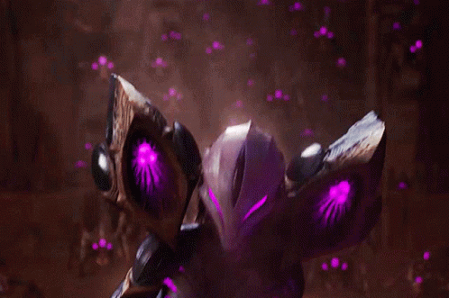

Reasons why Kai-Sa is the best ADC
- She's hot.
- Your W gives you two stacks of plasma. This makes your level 2 all in insane if you AA 3 times and W.
- If you make sure to position your champion properly, your isolated q does an insane amount of damage.
- If you're shit at CSing Kai-Sa q executes minions past a certain amount of hp

- You can animation cancel abilities with autoes. Just auto (then use ability). Applies to all abilities.
- If you auto then ult, you will auto attack 2 times in one second.
- You can W flash to reposition your character. This means you can surprise your enemy by W'ing past minions.
- Once you evolve E, you can pretend to move one direction, then e the other to juke them.
- You can play her AP

Follow this guide and you can play like this.